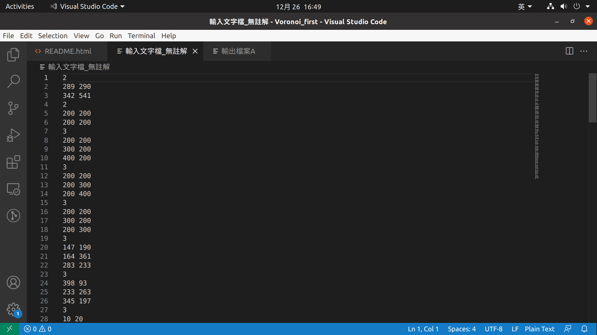
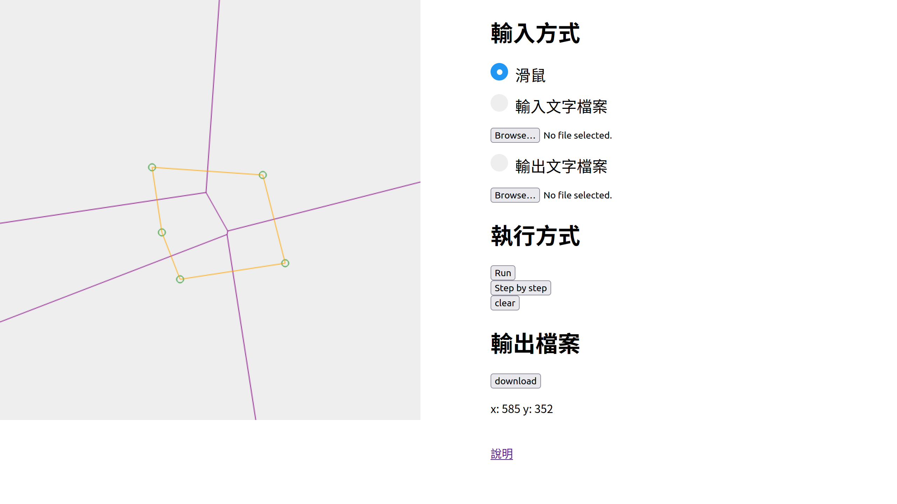

題目、系級、姓名、學號
Voronoi diagram 演算法
資工碩一
何承翰
M103040056
軟體規格書：包含「輸出與輸入（資料）規格」、「功能規格與介面規格」、「軟體測試規劃書」與其他有利於軟體開發之規格。
輸入資料規格
n 表示此組測驗中會有n個點的輸入
x_1 y_1 第1個點的x,y值
x_2 y_2 第2個點的x,y值
x_3 y_3 第3個點的x,y值
...

輸出資料規格
P x y 輸入的座標點
E x1 y1 x2 y2 線段：(x1, y1) 為起點，(x2, y2) 為終點，其中 x1≦x2 或 x1=x2, y1≦y2
 介面規格
介面規格

功能規格
Browse...：開啟檔案
Run：執行到最後
Step：Step By Step 執行
clear：清除畫布
download：下載輸出檔案
軟體說明
開啟方式
使用 Google Chrome 開啟
index.html
輸入方式
1. 輸入分成3種，要先選對應的輸入選項按鈕才能輸出
2. 如果要產生目前畫布上頂點的Voronoi，要先換成
滑鼠選項
執行方式
Run 直接建立 Voronoi
Step by step 一步一步執行
clear 清空所有點
輸出檔案
download 下載<輸出文字檔案>至瀏覽器預設下載資料夾
程式設計：將演算法於程式設計中，需要使用的資料結構，所需注意的細節或特別的技巧，在此部分講述。如果演算法有改良之處，亦在此描述。
建立 Voronoi Diagram
step.1 排序輸入的點
step.2 recursive 到輸入點數量 <= 2，直接產生 Voronoi Diagram
step.3 merge 左右兩邊 Voronoi Diagram，直到完成
Convex Hull
在建立點數量 <= 2的 Voronoi Diagram 時，就記著當前 convex hull
所以只需要計算上下兩條切線，然後捨棄左右兩邊非 convex hull 的點
Hyperplane
step.1 建立 convex hull 較高之切線的中垂線 PB
step.2 找左右兩 Voronoi 中最早碰到 PB 的邊，換新的 PB
step.3 重複 step.2 直到抵達 convex hull 較低之切線
軟體測試與實驗結果： 軟體之測試報告。包含測試的環境、使用的電腦硬體系統（CPU型號、記憶體容量等）、作業系統、編譯器名稱及版本。 然後列出測試數據。必須列出程式可以執行之範例數據（最好列出程式可以執行之極限數據）。 如果有些情況無法執行，請列出可能原因及可能解決之道。並請提供測試時之「測試輸入檔」與「測試輸出檔」。
測試環境
Browser Google Chrome 96.0.4664.45
JavaScript engine V8 9.6.180.12
OS Windows 10 Pro 20H2
CPU i7-1165G7
Memory 16GB
結論與心得：說明所得結論、可以改良之處與心得等。
心得
做完這次Term Project，我學到了使用 Divde-and-conquer 實作 Voronoi Diagram 的方法，
雖然這個技巧並不是有效率的解法，但還是能看出 Divde-and-conquer 比暴力硬解好很多，
除了演算法的部份，我也更熟悉了使用程式繪圖使用者輸入以及檔案處理
可改良之處
每次找hyperplane都需要和所有點比較，所以執行的效率不佳， 如果能改用課本資料結構撰寫，那麼時間複雜度會變得很漂亮～
附錄：請連結「程式原始碼合併檔」、「測試輸入檔」、「測試輸出檔」等與報告相關之資料。